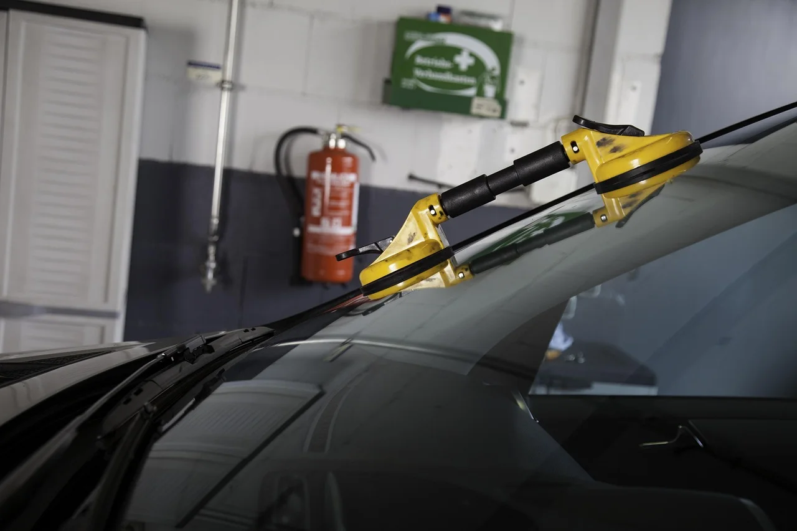

Kernleistung
Autoglas
Deine Scheibe. Unser Handwerk.

Steinschlag oder Scheibe kaputt? Warte nicht, bis aus dem kleinen Einschlag ein Riss wird. Wir reparieren Deinen Steinschlag in 30 Minuten – und wenn getauscht werden muss, bekommst Du eine neue Scheibe in Erstausrüsterqualität. Die Abwicklung mit Deiner Versicherung übernehmen wir gleich mit.
- Steinschlagreparatur
- 30 Min · Kasko: i. d. R. 0 €
- Neueinbau Front-, Heck- & Seitenscheiben
- Erstausrüsterqualität
- Garantie (Haltbarkeit / Dichtigkeit)
- 30 Jahre
- Mobiler Service
- Wir kommen zu Dir
- Einbruchschaden
- Soforthilfe + Notverglasung
- Versicherung
- Abwicklung durch uns
- Hol- & Bringservice
- Auf Wunsch